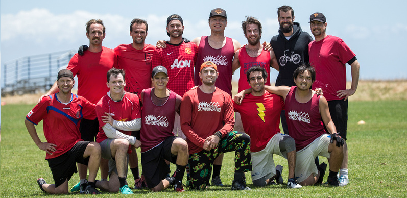
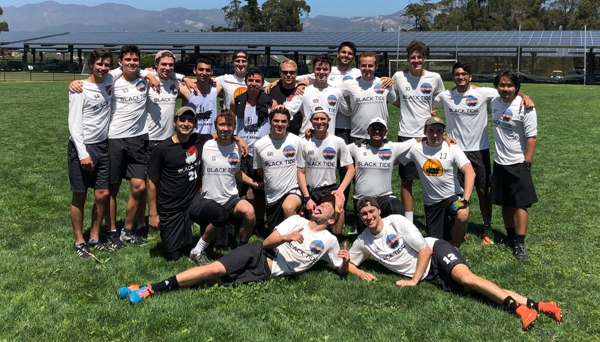

I like to write code and throw discs.
Computer Engineering graduate of the University of California, Santa Barbara, eager to learn about all aspects of the software industry including full stack development, DevOps, and product management.
Experience
Software Development Engineer at Yardi Systems Inc.
Currently, I work for Yardi Systems, developing their RentCafé leasing platform. As a full-stack web developer developing on the .NET Framework, I build custom property marketing websites, integrate leasing workflows into an online platform, and management tools and dashboards for large apartment owners. This is where I learned a majority of my knowledge of a web development workflow from request to response, including Javascript, CSS, SQL, and server architecture.

Intern at Proofpoint, Inc.
I spent one summer as a Production Service Engineering Intern at Proofpoint. Working in Operations there gave me my first glimpse into the software industry. While there, I developed a graphical tool to assist developers in monitoring the status of their hypervisors. I also learned a about the system configuration language Puppet. Overall, it was a fantastic experience and a large influence in my desire to learn more about security!
Live Audio Engineering at Campbell Hall
I also worked at UCSB's largest lecture hall as a student audio engineer and stagehand. The hall holds classes for UCSB students during the day and presents shows with professional lecturers, musicians, and stage troupes at night. Mixing live audio for over 800 people has taught me to have strong preparation, clear communication, and calm patience during high pressure situations where mistakes are immediately noticable.
Projects
Ongoing:
- Ulimate Scenarios - Searchable explanations of all consequences of the 11th edition USAU rules.
- Chess Clock Connect4 - Normal Connect 4 is too easy. Chess clocks make everything more fun.
- Miku.db - Musical album administrative dashboard utilizing Vue.js.
Previous:
mezzo
While interning at Proofpoint, I busied my nights with learing Ruby on Rails. As my group Senior Capstone Project, this was the perfect opportunity to practice my basic knowledge of Rails while practicing Agile development for the first time. With the help of Appfolio, Mezzo was a location-based social search designed to bring local musicians together. While never fully completed, I'm definitely interested in potentially revisiting this idea at a future date.
Airplane Foam Core CNC
My first foray into engineering began the summer before college, where an Electrical Engineer gave me the opportunity to assist him with his project in building an airplane from scratch. Using DesignCAD 3D, we mocked up cross sections of an airplane wing, converted the coordinates to G-Code with FoamWorks, and ran a hot-wire CNC machine with Mach 3 Mill. Despite it being mechanical engineering, this initial project likely cemented my drive to persue engineering as a career.
Currently Interested In...
Do anything else?
Outside of coding, I play competitive Ultimate Frisbee with the Santa Barbara Sundowners during the summer.
During the college season, I help coach UCSB Black Tide's Men's Developmental Ultimate team.
Throughout the year, I work with USA Ultimate as an Observer and as a Referee as well as a board member of Santa Barbara Youth Ultimate.
I play a lot of frisbee.